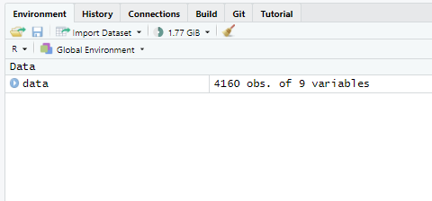
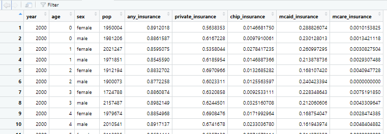

── Attaching core tidyverse packages ──────────────────────── tidyverse 2.0.0 ──
✔ dplyr 1.1.4 ✔ readr 2.1.5
✔ forcats 1.0.0 ✔ stringr 1.5.1
✔ ggplot2 3.5.1 ✔ tibble 3.2.1
✔ lubridate 1.9.3 ✔ tidyr 1.3.1
✔ purrr 1.0.2
── Conflicts ────────────────────────────────────────── tidyverse_conflicts() ──
✖ dplyr::filter() masks stats::filter()
✖ dplyr::lag() masks stats::lag()
ℹ Use the conflicted package (<http://conflicted.r-lib.org/>) to force all conflicts to become errorsReading in data and basic data manipulation using R
Getting started
In this page we will get started using R to read in data, installing packages, and manipulating data.
To read in our data, we will use R’s tidyverse family of libraries. Before we begin, let’s make sure that we have the most recent version of tidyverse installed:
install.packages(“tidyverse”)
Depending on when you last updated your computer this may, or may not, result in a bunch of output about installing the package.
Next, let’s load the library:
library(tidyverse)
The output that follows library("tidyverse") is fairly typical and is R’s way of telling you that if you type in certain commands, such as filter, you may get the results of a different function than the one that you expected. The double colon notation (::) is a way to make sure that you got the version of the command that you wanted to use. So if you wanted to use the filter command from the stats package after this you would type stats::filter instead of just filter.
Reading data with R
Now that we have loaded the tidyverse, let’s go get the data file. For this example, we are using a cleaned dataset that I have created from the National Health Interview Survey to demonstrate how insurance coverage changes over time. This file is located at https://andersen-hecon.github.io/data/nhis_for_example.csv and we can load the file (and assign it to the name data) using the code:
data<-read_csv(“https://andersen-hecon.github.io/data/nhis_for_example.csv”)
As you can see below, executing this code results in R providing some data about the file–in particular the “Delimiter,” or how the columns of data are divided (commas in this case), and the types and names of the columns.
Rows: 4128 Columns: 9
── Column specification ────────────────────────────────────────────────────────
Delimiter: ","
chr (1): sex
dbl (8): year, age, pop, any_insurance, private_insurance, chip_insurance, m...
ℹ Use `spec()` to retrieve the full column specification for this data.
ℹ Specify the column types or set `show_col_types = FALSE` to quiet this message.We can suppress (or eliminate) this information using the option “show_col_types=FALSE” so that the code would read:
data<-read_csv(“https://andersen-hecon.github.io/data/nhis_for_example.csv”, show_col_types=FALSE)
Notice now that we have loaded the file that it appears in the environment window in the top right corner of the RStudio window:

Summarizing data
We can look at the data we have loaded in several ways. The easiest (in RStudio) is to use the viewer either by clicking on the data object in the environment window or by typing View(data) in the console window. These ways of viewing the data provide a detailed, line by line, view of the data. We can achieve something similar by typing data or print(data) at the console:
# A tibble: 4,128 × 9
year age sex pop any_insurance private_insurance chip_insurance
<dbl> <dbl> <chr> <dbl> <dbl> <dbl> <dbl>
1 2000 0 female 1950004 0.891 0.564 0.0147
2 2000 0 male 1981206 0.886 0.617 0.00979
3 2000 1 female 2021247 0.860 0.536 0.0278
4 2000 1 male 1971851 0.855 0.619 0.0147
5 2000 2 female 1912194 0.883 0.697 0.0133
6 2000 2 male 1900073 0.877 0.602 0.0126
7 2000 3 female 1724788 0.886 0.632 0.00925
8 2000 3 male 2157487 0.898 0.624 0.0325
9 2000 4 female 1979674 0.885 0.691 0.0172
10 2000 4 male 2010541 0.892 0.674 0.0233
# ℹ 4,118 more rows
# ℹ 2 more variables: mcaid_insurance <dbl>, mcare_insurance <dbl>Please pay careful attention to the last line of the output (“# ℹ 2 more variables: mcaid_insurance mcaid_insurace and mcare_insurance). Viewing the data allows us to see more variables and columns in RStudio:

Lastly, we can use the summary command to get some characteristics about the data and each variable by typing summary(data) at the console:
year age sex pop
Min. :2000 Min. : 0.0 Length:4128 Min. : 192055
1st Qu.:2006 1st Qu.:21.0 Class :character 1st Qu.:1609411
Median :2012 Median :42.5 Mode :character Median :1968180
Mean :2012 Mean :42.5 Mean :1777074
3rd Qu.:2017 3rd Qu.:64.0 3rd Qu.:2127850
Max. :2023 Max. :85.0 Max. :3702858
any_insurance private_insurance chip_insurance mcaid_insurance
Min. :0.4579 Min. :0.2905 Min. :0.000000 Min. :0.00000
1st Qu.:0.8348 1st Qu.:0.5496 1st Qu.:0.000000 1st Qu.:0.05995
Median :0.8965 Median :0.6312 Median :0.000000 Median :0.09480
Mean :0.8883 Mean :0.6249 Mean :0.010318 Mean :0.12910
3rd Qu.:0.9688 3rd Qu.:0.7040 3rd Qu.:0.005885 3rd Qu.:0.16583
Max. :1.0000 Max. :0.8603 Max. :0.140555 Max. :0.50108
mcare_insurance
Min. :0.000000
1st Qu.:0.004124
Median :0.024353
Mean :0.250897
3rd Qu.:0.159663
Max. :1.000000 The summary command provides useful information for datasets including the number of missing observations (in these data there are no missing observations) and measures of the distribution of each numerical variable. We can look at categorical variables using a variety of commands. One of the easiest is to count the levels of a variable, which reports the number of observations with each combination of values that you list in the count command:
Here we count(data, sex), which lists the number of observations in data by sex.
# A tibble: 2 × 2
sex n
<chr> <int>
1 female 2064
2 male 2064You may be looking at the output above and wondering what is up with those values–do they make sense? In this case the answer is NO! When I created this dataset I aggregated an individual level dataset up to the age-by-sex-by-year, level. The (weighted) number of observations in each cell is in the variable pop in the dataset. As an exercise, use the help information for count (which you can get to by typing ?count in the console) to figure out how you might account for the pop in each cell. Here is my answer:
# A tibble: 2 × 2
sex n
<chr> <dbl>
1 female 3745890881.
2 male 3589870752.
Tip
R allows you to chain commands together using a “pipe” character (|> that is | followed by >). This allows you to rewrite things like count(data,sex) as data|>count(sex). This feature allows you to break out the “nouns” in your process (i.e. data) from the verbs (i.e. count(sex)). I will use this notation below.
The core dplyr verbs
There are five main dplyr “verbs”:
select, which allows you to select and reorder variables from a dataframemutate, which allows you to create new or change existing variables (it is also possible to remove a variable).filter, subsets a dataframe based on the condition(s) you provide in thefilterstatementsummarizeaggregates a dataframe into groups that you define using eithergroup_by()or the.byargument tosummarizearrangesorts and reorders a dataframe
select
The select command allows you to subset, reorder, and rename variables from a dataframe.
Subsetting
For example, if we wanted to select only the variables year, sex, and age from the data dataframe we would type:
data|>select(year,sex,age)
The output would look something like this:
# A tibble: 4,128 × 3
year sex age
<dbl> <chr> <dbl>
1 2000 female 0
2 2000 male 0
3 2000 female 1
4 2000 male 1
5 2000 female 2
6 2000 male 2
7 2000 female 3
8 2000 male 3
9 2000 female 4
10 2000 male 4
# ℹ 4,118 more rowsI like to use the select command when I am writing code to help me make sure that I coded up a variable correctly, something that we will get to in the next command.
Reordering
Another use of the select command is to reorder the variables in a dataframe. For example, if we wanted to reorder the variables in the data dataframe so that age was the first variable, we would type:
data|>select(age,everything())
The output would look something like this:
# A tibble: 4,128 × 9
age year sex pop any_insurance private_insurance chip_insurance
<dbl> <dbl> <chr> <dbl> <dbl> <dbl> <dbl>
1 0 2000 female 1950004 0.891 0.564 0.0147
2 0 2000 male 1981206 0.886 0.617 0.00979
3 1 2000 female 2021247 0.860 0.536 0.0278
4 1 2000 male 1971851 0.855 0.619 0.0147
5 2 2000 female 1912194 0.883 0.697 0.0133
6 2 2000 male 1900073 0.877 0.602 0.0126
7 3 2000 female 1724788 0.886 0.632 0.00925
8 3 2000 male 2157487 0.898 0.624 0.0325
9 4 2000 female 1979674 0.885 0.691 0.0172
10 4 2000 male 2010541 0.892 0.674 0.0233
# ℹ 4,118 more rows
# ℹ 2 more variables: mcaid_insurance <dbl>, mcare_insurance <dbl>Now age is the first column of the dataframe.
Renaming
Finally, we can use the select command to rename variables. For example, if we wanted to rename the variable year to yr we would type:
data|>select(yr=year, everything())
The output would look something like this:
# A tibble: 4,128 × 9
yr age sex pop any_insurance private_insurance chip_insurance
<dbl> <dbl> <chr> <dbl> <dbl> <dbl> <dbl>
1 2000 0 female 1950004 0.891 0.564 0.0147
2 2000 0 male 1981206 0.886 0.617 0.00979
3 2000 1 female 2021247 0.860 0.536 0.0278
4 2000 1 male 1971851 0.855 0.619 0.0147
5 2000 2 female 1912194 0.883 0.697 0.0133
6 2000 2 male 1900073 0.877 0.602 0.0126
7 2000 3 female 1724788 0.886 0.632 0.00925
8 2000 3 male 2157487 0.898 0.624 0.0325
9 2000 4 female 1979674 0.885 0.691 0.0172
10 2000 4 male 2010541 0.892 0.674 0.0233
# ℹ 4,118 more rows
# ℹ 2 more variables: mcaid_insurance <dbl>, mcare_insurance <dbl>mutate
The mutate command can be used to create new variables by “assigning” a value to a variable name. For example, we can create a new variable age_squared that is the square of age by typing:
data|>mutate(age_squared=age^2)
If you run that line of code in your console window you should see something like:
# A tibble: 4,128 × 10
year age sex pop any_insurance private_insurance chip_insurance
<dbl> <dbl> <chr> <dbl> <dbl> <dbl> <dbl>
1 2000 0 female 1950004 0.891 0.564 0.0147
2 2000 0 male 1981206 0.886 0.617 0.00979
3 2000 1 female 2021247 0.860 0.536 0.0278
4 2000 1 male 1971851 0.855 0.619 0.0147
5 2000 2 female 1912194 0.883 0.697 0.0133
6 2000 2 male 1900073 0.877 0.602 0.0126
7 2000 3 female 1724788 0.886 0.632 0.00925
8 2000 3 male 2157487 0.898 0.624 0.0325
9 2000 4 female 1979674 0.885 0.691 0.0172
10 2000 4 male 2010541 0.892 0.674 0.0233
# ℹ 4,118 more rows
# ℹ 3 more variables: mcaid_insurance <dbl>, mcare_insurance <dbl>,
# age_squared <dbl>Note that we have now created a new column, but we can only tell by looking at the bottom line of the output. Let’s fix that by using the select command:
data|>mutate(age_squared=age^2)|>select(age, age_squared,everything())
# A tibble: 4,128 × 10
age age_squared year sex pop any_insurance private_insurance
<dbl> <dbl> <dbl> <chr> <dbl> <dbl> <dbl>
1 0 0 2000 female 1950004 0.891 0.564
2 0 0 2000 male 1981206 0.886 0.617
3 1 1 2000 female 2021247 0.860 0.536
4 1 1 2000 male 1971851 0.855 0.619
5 2 4 2000 female 1912194 0.883 0.697
6 2 4 2000 male 1900073 0.877 0.602
7 3 9 2000 female 1724788 0.886 0.632
8 3 9 2000 male 2157487 0.898 0.624
9 4 16 2000 female 1979674 0.885 0.691
10 4 16 2000 male 2010541 0.892 0.674
# ℹ 4,118 more rows
# ℹ 3 more variables: chip_insurance <dbl>, mcaid_insurance <dbl>,
# mcare_insurance <dbl>Now, take a look at the output. Is it correct? Is the second column the square of the first column? If not, what went wrong?
We will use the mutate command to create a new variable that creates two variables that we will use later. First, we will create a variable over65 that equals 1 if age is greater than or equal to 65. In order to do this, we will use the if_else command, which is a way to create a conditional variable. The if_else command takes three arguments: the condition, the value if the condition is true, and the value if the condition is false. For example, if we wanted to create a variable over65 that equals 1 if age is greater than or equal to 65 and 0 otherwise we would type:
data|>mutate(over65=if_else(age>=65,1,0))
# A tibble: 4,128 × 10
age over65 year sex pop any_insurance private_insurance
<dbl> <dbl> <dbl> <chr> <dbl> <dbl> <dbl>
1 0 0 2000 female 1950004 0.891 0.564
2 0 0 2000 male 1981206 0.886 0.617
3 1 0 2000 female 2021247 0.860 0.536
4 1 0 2000 male 1971851 0.855 0.619
5 2 0 2000 female 1912194 0.883 0.697
6 2 0 2000 male 1900073 0.877 0.602
7 3 0 2000 female 1724788 0.886 0.632
8 3 0 2000 male 2157487 0.898 0.624
9 4 0 2000 female 1979674 0.885 0.691
10 4 0 2000 male 2010541 0.892 0.674
# ℹ 4,118 more rows
# ℹ 3 more variables: chip_insurance <dbl>, mcaid_insurance <dbl>,
# mcare_insurance <dbl>Let’s look at over65 using count too:
count(data,over65)
Error in `count()`:
! Must group by variables found in `.data`.
✖ Column `over65` is not found.Wait! We got an error! Why? Because over65 isn’t there! What happened?
R doesn’t update a dataframe with the calculations that you did, unless you explicitly tell it to do so. How do we do that? We can use the = or <-. The differences between these two are a bit technical and not worth diving into. For now, let’s run that command again, but this time assign the results to data:
data<-data|>mutate(over65=if_else(age>=65,1,0))
# A tibble: 2 × 2
over65 n
<dbl> <int>
1 0 3120
2 1 1008Now, let’s create one more variable age_minus_65 which, as the name suggests, is simply age minus 65:
data<-data|>mutate(age_minus_65=age-65)
We can check if we got it right by counting the age and age_minus_65:
data|>count(age,age_minus_65)
# A tibble: 86 × 3
age age_minus_65 n
<dbl> <dbl> <int>
1 0 -65 48
2 1 -64 48
3 2 -63 48
4 3 -62 48
5 4 -61 48
6 5 -60 48
7 6 -59 48
8 7 -58 48
9 8 -57 48
10 9 -56 48
# ℹ 76 more rowsfilter
The filter command allows you to subset the rows of your data (not columns, which is what select does) using a conditional expression. For example, if we wanted to select only the rows of the data dataframe where age is greater than or equal to 65 we would type:
data|>filter(age>=65)
# A tibble: 1,008 × 11
year age sex pop any_insurance private_insurance chip_insurance
<dbl> <dbl> <chr> <dbl> <dbl> <dbl> <dbl>
1 2000 65 female 1132678 0.982 0.620 0
2 2000 65 male 937803 0.978 0.725 0
3 2000 66 female 872208 0.997 0.603 0
4 2000 66 male 784400 0.954 0.625 0
5 2000 67 female 993634 0.967 0.630 0
6 2000 67 male 893301 0.955 0.666 0
7 2000 68 female 1079059 0.993 0.635 0
8 2000 68 male 733120 0.957 0.646 0
9 2000 69 female 968159 0.991 0.692 0
10 2000 69 male 681218 1 0.699 0
# ℹ 998 more rows
# ℹ 4 more variables: mcaid_insurance <dbl>, mcare_insurance <dbl>,
# over65 <dbl>, age_minus_65 <dbl>In this output, the first value of age that we see is 65, which is what we would expect.
You can also do more complicated expressions. For example, if we wanted to select only the rows of the data dataframe where age is greater than or equal to 65 and sex is equal to 1 we would type:
data|>filter(age>=65, sex==1)
# A tibble: 0 × 11
# ℹ 11 variables: year <dbl>, age <dbl>, sex <chr>, pop <dbl>,
# any_insurance <dbl>, private_insurance <dbl>, chip_insurance <dbl>,
# mcaid_insurance <dbl>, mcare_insurance <dbl>, over65 <dbl>,
# age_minus_65 <dbl>
Tip: Logical comparisons in R
| Symbol | Description | Example |
|---|---|---|
| > | Greater than | 5 > 6 returns FALSE |
| < | Less than | 5 < 6 returns TRUE |
| == | Equals to | 10 == 10 returns TRUE |
| != | Not equal to | 10 != 10 returns FALSE |
| >= | Greater than or equal to | 5 >= 6 returns FALSE |
| <= | Less than or equal to | 6 <= 6 returns TRUE |
When using the filter command, you can put in multiple statements (like we did to filter by age AND sex). But, when you do that the filter command only keeps rows that meet all of those criteria. If you want to keep rows that meet any of the criteria you can use the | symbol. For example, if we wanted to select only the rows of the data dataframe where age is greater than or equal to 65 OR sex is equal to 1 we would type:
data|>filter(age>=65 | sex==1)
# A tibble: 1,008 × 11
year age sex pop any_insurance private_insurance chip_insurance
<dbl> <dbl> <chr> <dbl> <dbl> <dbl> <dbl>
1 2000 65 female 1132678 0.982 0.620 0
2 2000 65 male 937803 0.978 0.725 0
3 2000 66 female 872208 0.997 0.603 0
4 2000 66 male 784400 0.954 0.625 0
5 2000 67 female 993634 0.967 0.630 0
6 2000 67 male 893301 0.955 0.666 0
7 2000 68 female 1079059 0.993 0.635 0
8 2000 68 male 733120 0.957 0.646 0
9 2000 69 female 968159 0.991 0.692 0
10 2000 69 male 681218 1 0.699 0
# ℹ 998 more rows
# ℹ 4 more variables: mcaid_insurance <dbl>, mcare_insurance <dbl>,
# over65 <dbl>, age_minus_65 <dbl>Think about how you would check if you got the right answer. What would you do?
summarize
Sometimes you want to summarize or aggregate your data, either to simplify your analysis later on, make a dataset that is easier for students to use, or other reasons. You do that with the summarize verb in R. For example, if we wanted to summarize the data dataframe by year and sex we would type: > data|>group_by(year,sex)|>summarize(mean_age=mean(age),n=n())
data|>group_by(year,sex)|>summarize(mean_age=mean(age),n=n())`summarise()` has grouped output by 'year'. You can override using the
`.groups` argument.# A tibble: 48 × 4
# Groups: year [24]
year sex mean_age n
<dbl> <chr> <dbl> <int>
1 2000 female 42.5 86
2 2000 male 42.5 86
3 2001 female 42.5 86
4 2001 male 42.5 86
5 2002 female 42.5 86
6 2002 male 42.5 86
7 2003 female 42.5 86
8 2003 male 42.5 86
9 2004 female 42.5 86
10 2004 male 42.5 86
# ℹ 38 more rowsHmmm…. this doesn’t look right, does it? Every combination appears to have the same mean_age and n. What went wrong? The problem is that we didn’t tell R to calculate the mean and count taking into account the number of observations wihtin each cell. We can do that in one of two ways. We can use the weighted.mean command to compute the weighted mean (and then use the sum command to get the sum of pop). But we can also go back to “first principles” and remember that the mean of a variable is the sum of the variable times the weight divided by the sum of the weight.
So, we can calculate the mean of age by year and sex by typing:
data|>group_by(year,sex)|>summarize( mean_age=sum(age*pop)/sum(pop), n=sum(pop))
data|>group_by(year,sex)|>summarize(
mean_age=sum(age*pop)/sum(pop),
n=sum(pop))`summarise()` has grouped output by 'year'. You can override using the
`.groups` argument.# A tibble: 48 × 4
# Groups: year [24]
year sex mean_age n
<dbl> <chr> <dbl> <dbl>
1 2000 female 36.3 140398513
2 2000 male 34.3 133625780
3 2001 female 36.5 141586626
4 2001 male 34.4 134894673
5 2002 female 36.6 142734367
6 2002 male 34.6 136060670
7 2003 female 37.0 146414283
8 2003 male 34.8 139600816
9 2004 female 37.2 147355026
10 2004 male 35.0 140902784
# ℹ 38 more rowsThis looks better. There is now some variation in the average age and the group sizes. In the next page, we will dive into this a bit more carefully when we introduce ggplot as a means to visualize data.
Wait a minute, what is gorup_by doing? group_by is a little helper verb that makes everything that follows run at the level of each individual group. For mutate this isn’t (usually) a big deal, but for summarize it is vital because that is how we tell summarize what groups to use for summarizeing the data.
Tip:
group_by and .by
Most tidyverse commands that work with groups have a .by argument that allows you to specify the groups that you want to use. For example, you could have written the summarize command above as: > data|>summarize( > mean_age=sum(age*pop)/sum(pop), > n=sum(pop), .by=c(year,sex))
Where the final c function tells R to use BOTH year and sex together to construct the groups.
Summarizing multiple variables at once
Suppose we wanted to compute the weighted average of a few more variables (not just age). Maybe we wanted to look at changes in isnurance coverage by year (we will ignore sex for the moment). We can use the across command to help us out. across takes a list of variable names and a function template to do the same computation across the columns. To calculate the average age, the average of mcaid_insurance, the average of pricate_insruance. and the average of mcare_insurance by year we would type:
data|>group_by(year)|> summarize( across( c(age,mcaid_insurance,private_insurance,mcare_insurance), ~sum(.x*pop)/sum(pop) ) )
data|>
group_by(year)|>
summarize(across(c(age,mcaid_insurance,private_insurance,mcare_insurance),~sum(.x*pop)/sum(pop)))# A tibble: 24 × 5
year age mcaid_insurance private_insurance mcare_insurance
<dbl> <dbl> <dbl> <dbl> <dbl>
1 2000 35.3 0.0810 0.708 0.125
2 2001 35.5 0.0806 0.708 0.125
3 2002 35.6 0.0928 0.688 0.124
4 2003 36.0 0.0947 0.674 0.125
5 2004 36.1 0.0963 0.672 0.127
6 2005 36.3 0.102 0.663 0.131
7 2006 36.4 0.110 0.644 0.134
8 2007 36.5 0.111 0.648 0.136
9 2008 36.7 0.115 0.639 0.141
10 2009 36.9 0.124 0.617 0.141
# ℹ 14 more rowsNow we see that we have the columns that we want!
arrange
The final verb we will cover is arrange, which is used to arrange or order a dataframe. For example, if we wanted to order the data dataframe by age we would type:
data|>arrange(year)
# A tibble: 4,128 × 11
year age sex pop any_insurance private_insurance chip_insurance
<dbl> <dbl> <chr> <dbl> <dbl> <dbl> <dbl>
1 2000 0 female 1950004 0.891 0.564 0.0147
2 2000 0 male 1981206 0.886 0.617 0.00979
3 2001 0 female 1945606 0.942 0.675 0.0239
4 2001 0 male 1995217 0.921 0.626 0.0225
5 2002 0 female 1931185 0.938 0.579 0.0343
6 2002 0 male 2010451 0.926 0.554 0.0469
7 2003 0 female 1849941 0.936 0.540 0.0118
8 2003 0 male 2020784 0.942 0.517 0.0273
9 2004 0 female 1923205 0.943 0.500 0.0212
10 2004 0 male 1968188 0.940 0.551 0.0442
# ℹ 4,118 more rows
# ℹ 4 more variables: mcaid_insurance <dbl>, mcare_insurance <dbl>,
# over65 <dbl>, age_minus_65 <dbl>Now we see the values for age 0 by year and then if you went down the table you would see the values for age 1 by year, and so on.
We can even arrange by more than one variable by simply adding another variable to the list:
data|>arrange(year,any_insurance)
# A tibble: 4,128 × 11
year age sex pop any_insurance private_insurance chip_insurance
<dbl> <dbl> <chr> <dbl> <dbl> <dbl> <dbl>
1 2000 0 male 1981206 0.886 0.617 0.00979
2 2000 0 female 1950004 0.891 0.564 0.0147
3 2019 0 female 1877997. 0.914 0.523 0.0461
4 2001 0 male 1995217 0.921 0.626 0.0225
5 2002 0 male 2010451 0.926 0.554 0.0469
6 2007 0 female 2062998 0.929 0.437 0.0541
7 2012 0 female 1879587 0.930 0.371 0.0496
8 2010 0 male 1974740 0.934 0.505 0.0358
9 2008 0 male 2052277 0.934 0.478 0.0484
10 2006 0 male 2085037 0.936 0.473 0.0389
# ℹ 4,118 more rows
# ℹ 4 more variables: mcaid_insurance <dbl>, mcare_insurance <dbl>,
# over65 <dbl>, age_minus_65 <dbl>Now the data are sorted by age and then the fraction with any private insurance. But what if we wanted to see the year when each age group had the highest level of insurance? Then we need to switch from the default “ascending” sort order to a “descending” sort order, which we can do with the desc operator:
data|>arrange(year,desc(any_insurance))
# A tibble: 4,128 × 11
year age sex pop any_insurance private_insurance chip_insurance
<dbl> <dbl> <chr> <dbl> <dbl> <dbl> <dbl>
1 2020 0 female 2201385. 0.992 0.423 0.0247
2 2011 0 male 2052705 0.988 0.444 0.0697
3 2018 0 male 1986534 0.985 0.543 0.0535
4 2017 0 female 1767121 0.984 0.500 0.0367
5 2018 0 female 1940610 0.983 0.565 0.00631
6 2023 0 male 1882530 0.983 0.585 0.0204
7 2016 0 female 1886954 0.978 0.593 0.0113
8 2016 0 male 1930821 0.977 0.504 0.0265
9 2015 0 female 1964199 0.977 0.472 0.0393
10 2011 0 female 1868103 0.976 0.487 0.0429
# ℹ 4,118 more rows
# ℹ 4 more variables: mcaid_insurance <dbl>, mcare_insurance <dbl>,
# over65 <dbl>, age_minus_65 <dbl>Now we have any_insurance in a decreasing order within each of the age groups.
Saving your work
Before we leave this page, we should save our work. We will use the write_csv command to do this. Before you save the file though, you should check where it will be saved. This is called your “working directory” and you can see what it is using getwd(). Type it in the console and you should see a location on your hard drive. Does this location seem right for you? If not, you can change it using the setwd command.
Now that you have chosen the folder, let’s save the file:
data|>write_csv(“nhis_working_data.csv”)
Practice
Here are some practice exercises that you can do with the data dataframe and the core dplyr verbs.
- Calculate average insurance coverage (for each type) using the
over65variable that we created earlier by year.
My result
To highlight an event of particular interest, I am going to show results for the years 2012 through 2016
`summarise()` has grouped output by 'over65'. You can override using the
`.groups` argument.# A tibble: 10 × 7
# Groups: over65 [2]
over65 year age any_insurance mcaid_insurance private_insurance
<dbl> <dbl> <dbl> <dbl> <dbl> <dbl>
1 0 2012 31.8 0.831 0.148 0.616
2 0 2013 31.9 0.832 0.149 0.613
3 0 2014 32.0 0.862 0.171 0.629
4 0 2015 32.0 0.889 0.185 0.649
5 0 2016 32.1 0.895 0.196 0.650
6 1 2012 74.0 0.992 0.0680 0.516
7 1 2013 73.9 0.989 0.0734 0.497
8 1 2014 73.8 0.991 0.0744 0.501
9 1 2015 73.8 0.994 0.0789 0.488
10 1 2016 73.7 0.991 0.0776 0.482
# ℹ 1 more variable: mcare_insurance <dbl>- Calculate the number of people with any insurance by year
Hint
You will need to do a calculation along the way. You can either do that in a mutate step or in the summarize step. I would recommend the mutate step.
My result
# A tibble: 24 × 2
year number_insured
<dbl> <dbl>
1 2000 232859140
2 2001 237860025
3 2002 238411316
4 2003 242788085
5 2004 245359798
6 2005 247344515
7 2006 247511543
8 2007 252161957
9 2008 254112178
10 2009 253840146
# ℹ 14 more rows- Create a new variable
post_ACAthat equals 1 if the year if greater than or equal 2014 and 0 otherwise. Then calculate the average ofany_insurancein each of the cells defined bypost_ACA,over65andsex.
My result
`summarise()` has grouped output by 'post_ACA', 'over65'. You can override
using the `.groups` argument.# A tibble: 8 × 4
# Groups: post_ACA, over65 [4]
post_ACA over65 sex any_insurance
<dbl> <dbl> <chr> <dbl>
1 0 0 female 0.843
2 0 0 male 0.817
3 0 1 female 0.990
4 0 1 male 0.989
5 1 0 female 0.899
6 1 0 male 0.876
7 1 1 female 0.992
8 1 1 male 0.992